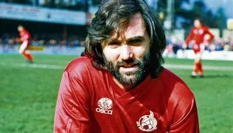

Winger
George Best
1963 – 1974 | 470 Apps | 179 Goals
Arguably the most gifted footballer to ever pull on the red shirt, George Best arrived from Belfast as a teenager and became a global superstar. Blessed with breathtaking dribbling ability, vision, and balance, Best was the heartbeat of United's 1968 European Cup winning side and European Footballer of the Year.